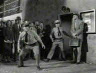
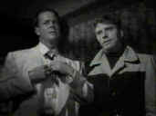
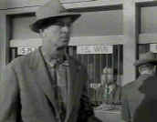
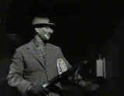
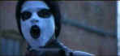
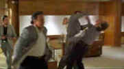
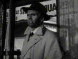

|
The Heistmasters
By Stu Kobak
Going to the movies can be a crash course
in any number of subjects. The movies instruct. Nitty gritty details are laid as a visual
instruction manual. Wanna learn the Carioca, swaying to the music like Astaire: you can watch the
master glide across the floor over and over and soon you too will be moving your feet through the
clouds. It can be scary too. Remember the hullabaloo around the thematic material of Taxi Driver
and how when Reagan was shot by John Hinckley the media made an immediate and not unreasonable
tie-in with the movie and Jodie Foster. Pure crime films often offer the crudest statement of the
man and the gun. With James Cagney as Cody Jarrett in White Heat the title suits the
character. Not much to be gleaned from the Jarrett equation. Heist films, like Stanley Kubrick’s The
Killing, however, are the best of these of these crime movies and often offer a college level
course in how to take down a score.
 |
|
Sterling waits for the right moment in The
Killing. ©MGM-UA
|
Though the heist film may serve as a
blueprint for crime, fortunately, most heist movies are about failed characters who ultimately pay
the price for their crimes and misdemeanors. Usually, it’s an unexpected element cropping up to
sully perfection. Maybe a cop walking his beat like in Dead Presidents. There is beauty
about a heist film’s dedication to detail. The heist film may depict perfectly successful crimes
done in by the greed of the gang members. There too lies a sense of perfection, the gang’s
perfect execution failing because these characters must fail of their own nature. The fascination
film lovers have for these movies relates directly to the precision is which the detail is laid
out. Heist movies have long catered to the passions of the cinephile. Consider the word itself:
heist. You can feel the clarity. A heist is a robbery and confrontation is one of the prime
elements.
A heist is not just a burglary, though it can be one; however, it must
include that element of confrontation. The man with the gun and the bank clerk with his hands
raised high. I like to think of a heist as having a certain panache about it. It’s not just
barging into a bank behind a gun. There has to be a plan. Part of the beauty of the heist is the
plan. Heist films can focus are different aspects of the heist. The planning can be the heart of
the heist film, or the execution of the plan, or the aftermath of the heist; the chase, the gang
defections, the self-imploding nature of the beast.
Like the noir film, which the heist film overlaps, there is a relish to
the darkness that threads its way into the fabric of these films. Many filmmakers find themselves
lured to material of this ilk, but few succeed in capturing the dynamics of the heist with the
clarity necessary to create explosive entertainment. The most successful directors of this
sub-genre are The Heistmasters. They understand the timings and rhythms needed to build and
sustain tension, prior to, during and after the heist. Their own sense of precision as filmmakers
is translated into relentless images, often violent and out of control on screen, but always
controlled by the director.
Since the late forties and fifties, the appearance of heist movies has
been sporadic, to say the least. Often, they appear in bunches, one project inspiring another. Most
recently, the excellent 1997 City of Industry featured a heist and its aftermath. Both Dead
Presidents and Heat were 1995 entries in the heist derby. Dead Presidents
detailed an armored car robbery with crisp Hughes Brothers editing and a pounding soundtrack, while
Heat became a heist classic presenting not just one of the greatest screen heists, but two.
A magic double for perfectionist director Michael Mann. The precision of Heat's heists
reflect the dedication and uncompromising vision of director Mann. But years before the brothers
Hughes and perfectionist Mann took their cracks at the heist, filmmakers of another generation were
producing classics of the genre.
 |
|
Lancaster and Duryea in Criss Cross
©MCA-Universal
|
Criss Cross has several major assets going for it. Directed
in 1949 by European émigré Robert Siodmak, its directness of approach marries well with the aims
of the heist. The heist is the constant focus of Criss Cross even though the relationship of
Steve (Burt Lancaster) and Anna (Yvonne DeCarlo) drives the story further than the van that
Lancaster drives in the heist. Told through flashbacks woven during the drive to the heist, Criss
Cross moves at a swift and sure pace. Robert Siodmak does an excellent job of moving this
classic film noir along toward the completion of the heist and the eventual confrontation and noir
twist. Like many heist films, Criss Cross, as the name indicates, is about the double cross
and triple cross. Trust no one might be the credo of this slickly delivered film. Along with the
sure performance of the likeable Lancaster, bad man Dan Duryea adds an edge of unpredictability to
the action. Director Siodmak proves himself the consummate heistmaster at the helm of this
beautifully realized heist classic.
Director Stephen Soderberg (Sex, Lies, & Videotape, Kafka, Kill of
the Hill) decided to tackle film noir in 1994 with a remake of Criss Cross called The
Underneath. Remakes are often a treacherous path to follow and when a film works as well as Criss
Cross, one wonders why not just re-release the movie. The conventional wisdom is contemporary
stars attract new audiences and in the case of black and white originals, color photography
supposedly adds a new dimension. The Underneath heist is well done, but does color do
anything for the execution. I doubt it. Can Peter Gallagher hold a candle to Burt Lancaster in the
role of the loser trying to make a go of it. Let’s not get ridiculous here. Lancaster brought a
sympathy to the character of Steve Thompson that is totally lacking in the remake. Who cares
whether or not Gallagher (called Michael Chambers in the remake) goes down. He’s a sleazy guy to
begin with. "Not a average Joe" trying to make it on his return home and falling over the
falls for a sexy girl. Maybe Soderberg should have tried for an original heist vision unhampered by
the huge shadow of the original. Originality goes a long way toward earning the accolade
heistmaster.
Stanley Kubrick earned his degree as heistmaster with the brilliant noir
classic The Killing. No, it’s not a film about mayhem and murder, though before it’s
over it sheds its fair share of blood. This is pure heist, distilled through the perspicacious
vision of Kubrick. The Killing of the title is the financial score from the daring racetrack
robbery depicted in the film.
 |
|
Hayden with Elisha Cook, Jr. behind the cage. The
Killing ©MGM-UA
|
The Killing opens in documentary
style as a narrator meticulously and coldly relates the events surrounding the heist of the
racetrack. After the opening shot of horses on the track sets the scene, Kubrick introduces each of
the players in the heist, setting up motivations and character. Cop Randy Kennan owes money to the
wrong people. Mutual clerk George Peatty can’t put enough on the table to satisfy his wife.
Johnny Clay, the mastermind of the heist, after a five year prison stint is looking for the big
score to change his life.
Kubrick has recruited a cast with heist written all over it. Sterling
Hayden offers up a failed quality as Joe Clay. Hayden is an actor born of classic noir elements.
Despite movie star looks, a morose quality dominates Hayden, suggesting a darkness and a twisted
perfection. Even when Hayden played hero like in Suddenly, opposite Frank Sinatra as a
psychopathic killer hired to hit the President, there is a perfect imperfection about his
character.
The assortment of character actors in The Killing is sweet. Hayden
is such a neutral screen presence he plays perfectly with colorful actors in small roles. Elisha
Cook, Jr., the wonderful Wilmer in The Maltese Falcon, brings his usual edge to the role of
racetrack mutual clerk George Peatty. Marie Windsor, Peatty’s wife Sherri is all ice and
disinterest. Race track bartender Mike Reilly is made sympathetic by Joe Sawyer through the scenes
in which he treats his wife sweetly. Ted De Corsia adds a corrupt fleshiness to cop Kennan.
Kubrick films in classic noir style as the heist plan unfolds, all shadows
and key lighting through the lens of cinematographer Lucien Ballard’s lens. Conflict is set up
early as soon as the heisters get together, adding an additional level of tension. By keeping each
of the set-up scenes to minimal length, the director prevents the talky nature of The Killing
to seem slow. The patient Kubrick understands. He moves back and forth in time in short increments,
building tension, stretching out the moment of the actual heist with overlapping scenes, repeating
minute portions of scenes, then cutting to alternative perspectives of the moments leading up to
the execution of the heist.
 |
|
A man, a mask and a gun. The Killing ©MGM-UA
|
The heist itself is utter simplicity. A
man, a mask, a gun and precise timing, each player doing his small part. What makes The Killing
delicious is the small coincidences that foil the perfection of the heist. A missed cab, a dog off
the leash, a wife having an affair, airline regulations. You could even say The Killing is
Stanley Kubrick doing Rashoman through a noir lens. We get to look at this cleverly
structured heist from any number of point of views and we can enjoy the execution all the more from
the various angles. The Killing is sublime filmmaking.
Just as a successful heist requires precision execution, a heist film has
similar needs. The heist film often seduces audience through precision planning, while a sense of
doom pervades casts a cloud over the proceedings. Each detail of the heist must be planned to
perfection, each player must perform his part. The participants in the heist are failed characters,
linked by desperation. They are fated to fail. There is a seductive beauty to the nature of the
heist. Often, even though we are aware that a crime is being planned and executed, audiences cannot
help but align themselves with the criminals. We watch as the heist unfolds, feeling the tension
build with realization that one unexpected moment can make everything go awry. In The Killing
it is the small dog, In Heat it is the lure of one more job, In some cases, the heisters are
doomed to failure even before the heist, as in The Getaway. Sam Peckinpah's deftly filmed
heist movie has the enormous advantage of Steve McQueen as it's star. McQueen typically brought an
added measure of cool to his films and The Getaway is no exception. As an ex-con and
top-notch criminal, McQueen's Doc McCoy is steely-eyed and lethal. He plans The Getaway's
bank heist with consummate professionalism. Everything goes awry because of double-dealing, just as
in Criss Cross, with Thompson as the fall guy, Doc McCoy is never supposed to drive off with
the loot. Peckinpah, always a master cutter, brings to the heist the tension and precision of a
well tuned crime. Once the heist is accomplished, The Getaway turns its lens on duplicity
and fire power in a classic hotel shoot-out, a door-to-door hail of bullets embellished by the
artful cinematography of Lucien Ballard, who also was the DP for The Killing. The 1972 Getaway
was remade in 1993 as a starring vehicle for Alec Baldwin and Kim Basinger. Directed by Roger
Donaldson The Getaway is slickly made but it doesn't break any new ground and Baldwin does
not manage to capture the cool of McQueen. The surprise is Basinger, who is clearly better than Ali
McGraw was in the original. I'd stick with the original if only to watch McQueen work at what he
does best and hell, it is Peckinpah and it's shot by Ballard. The 1972 film is available on laser
and DVD from MGM.
Heat , made in 1995, is one of the all time great heist flicks.
Though the heist is not the heart of this film it depicted with a dedication to perfection seldom
surpassed. It is often impossible to separate the heist from the preparation or the escape. In the
case of Heat, there are two brilliant heists, both classics, an armored car and a bank. Who
could ask for anything more. The first Heat set-piece is the armored car, which is executed
with the extreme precision that has become a Michael Mann signature. What I appreciate is the
planning and then the casual nature of the violence associated with crimes of this nature. It is
incidental. It doesn’t have to take place. Actually, the unnecessary violence that takes place
during this first heist almost lays the groundwork for the rest of the movie in that the rejected
gang member becomes a gnawing splinter in heist leader Neil McCauley’s craw that leads to his
fateful downfall.
Mann is an interesting artist in that he takes themes or elements and uses
them over and over again in different works. Great painters have also had this tendency to examine
in great detail stimulating elements of personal interest. Heat was preceded by a television
movie called LA Takedown that provided many of the plot elements for Heat. And the
same perfectionism that drove Neil MacCauley was carefully examined in Mann’s earlier Thief
in which James Caan played an ex-con safecracker with a passion for precision. Just as McCauley
knows you have to be able to walk away from everything at the drop of a match Caan’s safecracker
is ready to leave it all behind when the decisive moment comes. Still, none of Mann’s prior
efforts approaches the hypnotic quality of Heat and the two heists that form the set pieces
on which the plot is fattened out on are nothing short of mind-blowing.
Like Heat, Criss Cross has its twist and turns and
unexpected burst of violence. In Heat, it is the unprofessional quality of the act that
makes it stand out while in Criss Cross it is more a personal blow at Steve Thompson when
his friend and would-be mentor becomes the chief victim of his crime. Twists and turns, elements of
the heist that seem ever so comfortable on celluloid together.
 |
|
Heists often go awry. Dead Presidents ©Disney
|
Dead Presidents, I
companion in 1995's mini heist Renaissance has one of the most finely crafted heist sequences ever
captured on film. Editing of the sequence is as lightening quick as the execution of the heist.
This is one way to make a heist exciting. Quick, incisive stabs of action providing a minimal
amount of time to reflect on the perfection of the moment. Dead Presidents has the advantage
of modern sound to embellish the slashing film images with another level of impact. The Hughes
brothers are adept at making the most of their cinematic resources. Are they next in succession of
a line of film masters who understand the unique vocabulary to create the excitement and immediacy
of the heist on film?
 |
|
The heist: Quick and efficient. City of Industry
©Largo
|
The most recent entry into the heist sweepstakes is City of
Industry, a ferocious little film starring Harvey Keitel and directed by John Irvin. This time
out it's a successful jewel heist that is blown apart by greed. There's one especially choice
moment when you watch Stephen Dorff, the wildest of the heisters, contemplate his share of the cut
and follow his thought process to a tee. It's a neat big of acting and directing. City of
Industry's focus is clearly the aftermath of the heist . Perhaps it bogs down somewhat in the
complexity of the chase after the double cross, but the unrelenting nature and determination of
Keitel's Roy Egan is pure genre pleasure. With City of Industry Irvin achieves the accolade
heistmaster with his modern counterparts, Michael Mann and the Hughes Brothers.
Numerous other heist films have made it to the screen with varied success.
Charley Varrick, 1973, is a compact flick from director Don Siegel. The heist itself is of
little consequence, however, and it's the twist of particulars that make the film so enjoyable.
Would you believe Walter Matthau masterminding a heist. Playing Charley Varrick, Matthau
brings deadpan delivery to the machinations of a bank heist and its aftermath. The heist takes
place at the film's opening and plays mucho smooth under the crooked vision of veteran Don Siegel.
The Thomas Crown Affair is almost an excuse for an exercise in
cinematic showmanship. Director Norman Jewison is like a kid in a candy store so free is his use of
the then new split-screen techniques. Of course, nothing’s ever new, not even a fresh heist. In
the case of the split screen Abel Gance used in brilliantly in his seminal silent epic Napoleon.
Talk about the epitome of smooth, it’s Steve McQueen again, this time in a business suit smoking
a fat stogie and merely master-minding a series of sparkling heists. The heists are heightened by
multiple images on the screen. The first heist is clearly the best. The bank vault is ripe and then
rife with the smoke of the robbers. McQueen is a slick and able heist mastermind, keeping his focus
on those things most important in life, namely the sultry insurance investigator that’s on to his
trail. The split screens, the heists and fireworks all turn out to be little more than an excuse to
watch the two luminous co-stars of Thomas Crown, Faye Dunaway and Steve McQueen. With equal
shivers of ice these two measure the mental and sexual capacities of each other. They play chess,
drink wine, stare seductively. This time McQueen doesn’t have the firepower of the Getaway
to make his escape. He rides a Rolls Royce to freedom instead of a pick-up truck.
Americans don't have an exclusive on the heist film. Fans of the genre
should check out the street purity of Jean-Pierre Melville's French noirish gem, Bob Le Flambeur
(Bob the Gambler). The 1955 black and white film focuses more on the lives of these petty
crooks than on the heist of the Deauville Casino. But Melville directs with a confidence and direct
approach that makes this film a particular pleasure. Roger Duchesne is perfection is the role of
Bob and the assortment of Melville characters creates a marvelous ambiance for the world of Bob
Le Flambeur.
 |
|
Tough guy Bob in Bob Le Flambeur ©Image
|
The Brits have brought their peculiar
sensibilities to the heist film as well. The League of Gentlemen, stars Jack Hawkins as
disgruntled retired British Army Colonel Hyde. Hawkins recruits members of his former unit, all
down on their luck to some degree, to take part in a major bank heist. One of the pleasures of Gentlemen
is that there are two caper executions, the first to procure the implements which are used in the
ultimate heist. It's all laced with droll English humor to the very last scene. The Lavender
Hill Mob is another British take on the heist, pure golden humor from the very beginning. Alec
Guinness is the mastermind this time, with the object of his desire a shipment of gold bullion.
After the successful heist of the armored car carrying the gold, Guinness and cohort Stanley
Holloway meld the gelt down into statues of the Eiffel Tower. Charles Crichton directs the madness
with astounding non-stop energy. Believe me, this is all hilarious and the two stars are bumbling
masterpieces.
Simple or complex, these films all share a common feeling and appeal. He
diverse elements of the gang, smoldering, waiting to explode, constantly threatening the success of
the heist. Tension serves. You can dress the basics up with love, high powered guns and
sophisticated explosives, but it still boils down to the purity of execution. The Killing,
more than forty years later, is fresh as ever because Kubrick locked down the basics of a
Heistmaster. Why not try on a sampling of heist films for yourself. Guaranteed, you won't be
disappointed.
The Criterion edition laser disc of The
Killing is currently out-of-print. It is available in a gatefold laser edition from MGM-UA
packaged together with another interesting Kubrick film Killer's Kiss. The image
is excellent of this laser disc. Transfer elements are quite clean, focus is sharp. Perhaps the
contrast could have been pumped slightly. The very fine score from Gerald Fried, which in some ways
suggests the later score from Jerry Fielding for The Wild Bunch, sounds just fine.
Criss Cross is available in another two movie laser disc
set from Universal. Packaged with The Killers, another film that features a heist
and stars Burt Lancaster and is directed by Robert Siodmak. Criss Cross is delivered in a very fine
transfer. Immaculate transfer elements have been used to bring it to laser disc. The score by
Miklos Rozsa is a treat.
Dead Presidents is available as a terrific widescreen
special editon laser disc from Voyager as part of The Criterion Collection. The images are
consistently sharp and the beautiful photography of Lisa Renzler is shown off to best advantage.
The transfer is immaculate. The Dolby Digital 5:1 soundtrack is dynamic, directional, and
thoroughly involving. The extras included in the special edition are extensive and put together in
the most professional fashion. Second Audio Commentary is very informative. Dead Presidents is also
available in a plain vanilla laser disc version from Image/Disney. And coming May 19th, a DVD
version of Dead Presidents from Buena Vista.
City of Industry is currently available from Image
Entertainment in a 1.85:1 widescreen edition. The transfer is crisp and colors accurate and save
for some minor excessive grain in the opening moments, it's an excellent transfer. Flesh tones have
a good range and the blood on Harvey Keitel jumps right off the screen. The aggressive surround
sound is very good.
One original of The Getaway is already out on DVD from
MGM in an anamorphic transfer with colors a lot more vital than on the laserdisc from the same
company. There's a grainy feeling to many of the scenes, but that's the look Ballard and Peckinpah
were looking for. The remake from Universal is currently available on laser disc in a fine transfer
and has been announced for a May 26 DVD release.
The League of Gentlemen is a Criterion Collection release from
Voyager. There are no extras, but the clean transfer is representative of what laserphiles have
come to expect from the company.
Bob Le Flambeur was part of Image Entertainment's Cinemadisc
Collection of a number of years ago. I would guess that it is out of print, but don't quote. Check
with one of the big laser disc retailers. It's a solid of unexceptional transfer. Subtitles are
white with a black shadow and read easily enough. Contrast is slightly weak, but overall the image
never shorts the pleasure of the movie.
Heat is a Warner Brothers release. The laser disc
is sharp with intense colors. The widescreen release preserves the original aspect ratio of
the film. It's a first rate laser disc. Heat, long overdue on DVD from Warner still has no definite
release date.
The Underneath is available on laser disc from Universal in a
widescreen editon. Sharp with little grain, the transfer is spotless.
|
|
|
|

Selections from the feature archive include articles on Akira
Kurosawa, Frank Darabont,
Blonde
Bimbos, Hollywood Street Gangs,
or Vietnam:
The Hollywood Pariah, and many more....
Vietnam:
The Hollywood Pariah

During World War II, Hollywood pumped out war movies one after the other. Vietnam was was another
story. As far as Hollywood was concerned it was a pariah.

The
Movie Poster Archive includes extensive poster images from the films of stars like Susan Hayward,
Kirk Douglas, Katharine Hepburn and many more. Our featured star is James Mason

Click on the DVD MIA symbol for
profiles of DVDs missing in action.
Add films to the DVD MIA Master List by filling out
a simple form. Click Here
 
DVDPlanet is the DVD
incarnation of legendary laser retailer Ken Crane's. Deep discounts and serious service.
 Direct from the corridors of the Home Theater Forum, Home
Theater Talk is the newest place on the Net to discuss everything home theater. Friendly atmosphere
and knowledgeable folks are the secret ingredients. Direct from the corridors of the Home Theater Forum, Home
Theater Talk is the newest place on the Net to discuss everything home theater. Friendly atmosphere
and knowledgeable folks are the secret ingredients.
 Specializing
in the horror side of DVD, this site features interviews with masters of DVD horror and reviews of
discs. Specializing
in the horror side of DVD, this site features interviews with masters of DVD horror and reviews of
discs.

Specializing in DVD reviews, DVD Authority boasts almost 400 reviews in an easy to use, elegant,
interface.
Umberto Passini Online

Vintage & Contemporary Film Poster Art. Umberto has developed a fine Internet
reputation as reliable and honest. Nice posters too!
Movie
Collector's World

The publication you can't do without if your interested in Movie Posters

Cinemedia is
the largest film and media directory with over 25,000 links.

Home to The American Society of Cinematographers. Includes features from
American Cinematographer Magazine and more...

DVD Deals may be the
best site for all you high-tech bargain hunters. This site helps you find coupons and cheap DVDs at
all the major online stores.

A vast reservoir of DVD information, reviews, the kitchen sink. Check
out their huge DVD database including reviews from many sites.

News, information, features about current films in theaters and in the
pipeline. Easy to use interface.

The official site for information about the great comic director. A treat for connoisseurs of
classic Hollywood madcap.

The
DVD Answer Man is a new site devoted to spreading the DVD gospel. Answers to
questions, reviews, links and more....

DVD links, information about Web specials, news, Site reviews.
Selections from the feature archive include articles on Akira Kurosawa,
Frank Darabont, Blonde Bimbos, Hollywood Street Gangs,
or Vietnam: The Hollywood Pariah,
and many more....

Click on the image above for as original view of Akira Kurosawa's work

Catch the Hollywood take on Blonde Bimbos by clicking on the
image above.

Movie Rage: Death in the Aisles
Everyone knows what it feels like to get angry at the
movies these days. Here's a humorous but not so delightful view of big screen misery.
|